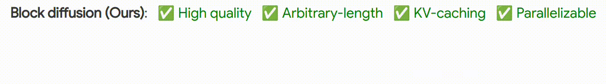

I design diffusion language models, a revolutionary new way to generate text.
Unlike traditional language models that generate one token at a time,
diffusion models output tokens in parallel.
My research explores novel diffusion language models and architectures to enhance their
quality, generation speed, and training efficiency.
Selected Papers
Arriola, M., Sahoo, S. S., Gokaslan, A., Yang, Z.,
Qi, Z., Han, J., Chiu, J. T., Kuleshov, V.
Block Diffusion: Interpolating Between Autoregressive and Diffusion Language Models.
ICLR 2025 (Oral, Top 1.77%).
[Paper]
[Blog]
[Code]

Sahoo, S., Arriola, M., Schiff, Y., Gokaslan, A.,
Marroquin, E., Chiu, J., Rush, A., Kuleshov, V.
Simple and Effective Masked Diffusion Language Models.
NeurIPS 2024.
[Paper]
[Blog]
[Code]